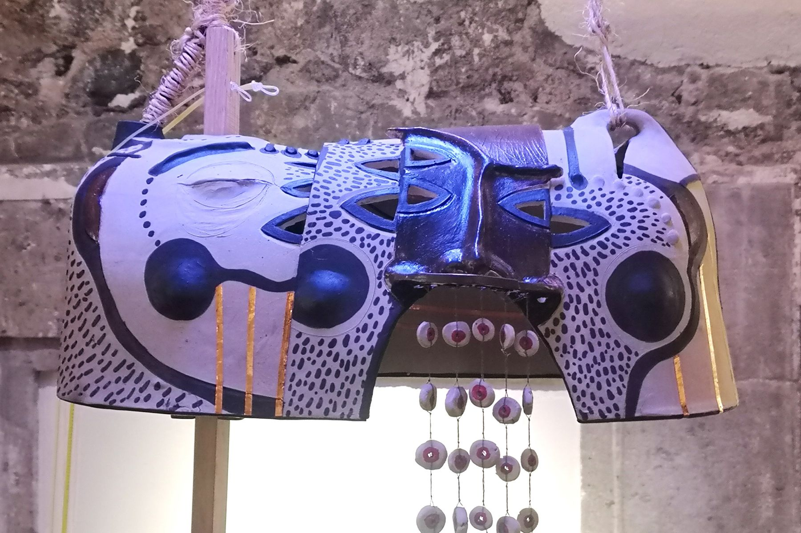
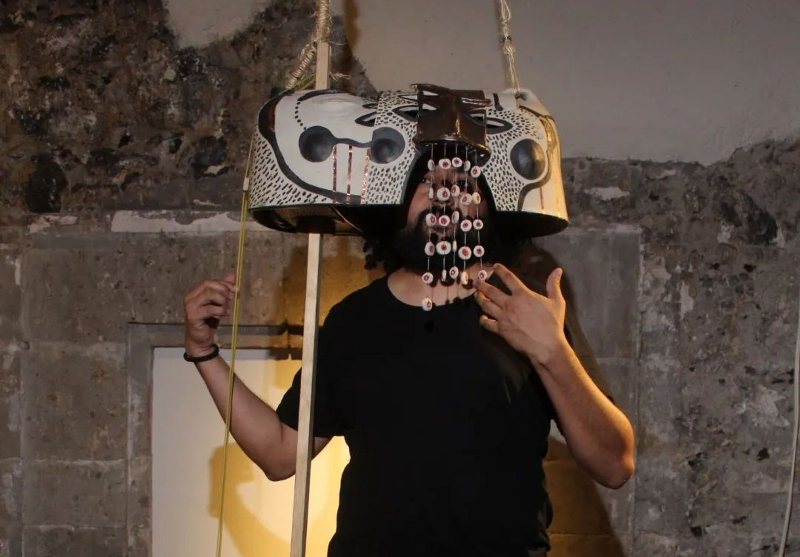
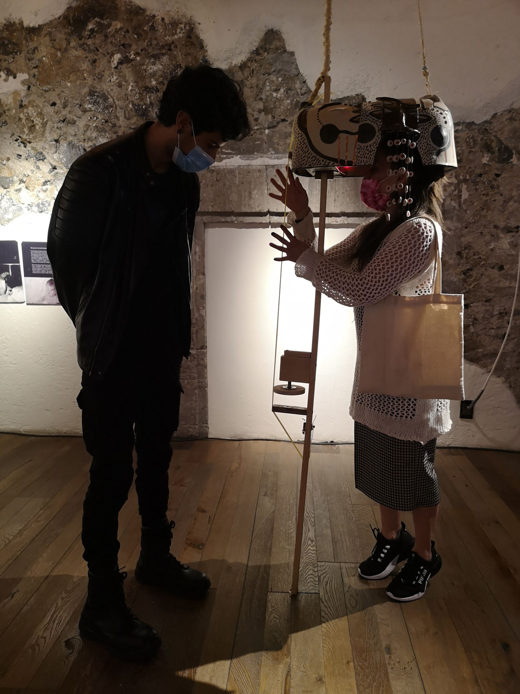
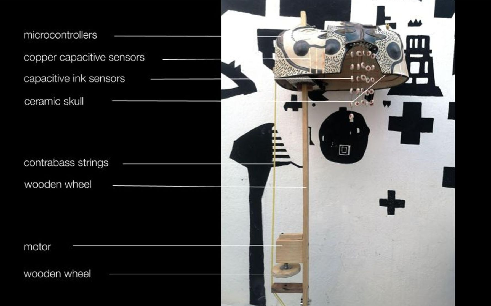

Consciousness Is the Precooking of the Universal Mind

Consciousness is the foreknowledge of the universal mind, explores Resonance Theory through the integration of experimental lutherie, ceramics, electronics and neural networks trained on texts by Jacobo Grinberg and the history of shamanism in Mexico. It addresses the perception of consciousness concerning the body, sound and voice in the field of AI.
Interactive Installation Ancestral AI / Experimental Luterie / Techno-Chamanism / Sound Sculpture
Resonance Theory
The Resonance Theory (Hunt, 2011) proposes that synchronization, harmonization, vibrations, or simply resonance have an integral relationship with consciousness itself. At the same time, this theory suggests that its method can address one of the "Hard problems" of consciousness: how matter (e.g., the human brain) is capable of having subjective experience? How do micro-conscious entities combine into a higher-level macro-consciousness?


The mind-body problem
The piece aims to create a potential sonic space for two entities to achieve resonance and intuitively explore the "mind-body" problem. A skull-ceramic acting as a simple subject proposes an experience. At the same time, a human/complex responds to this experience by modifying the resonance conditions while being surrounded by voices depicting shamanic interpretations of consciousness and alternate descriptions of the mind created by AI.

Materiality
The piece addresses the “mind-body” problem (Chalmers, 1996) by juxtaposing corporeal entities that are self-complete in their mutual perception. The skull-ceramic as a simple subject that proposes an experience, responds to the presence of the skull-human/complex subject, and enables a space for the synchronization of frequencies that in their texture open a mutual reflection.
Consciousness is the foreknowledge of the universal mind is a space for the synchronization of frequencies that, in their texture, open a mutual reflection on the complex connections between matter and consciousness.
Exhibitions
- “Aaaaaah!” The School of Machines 10-year anniversary exhibition Berlin, Germany, 2024
- Bienal Latinoamericana de Intelligencia Artificial Mexico, 2022
Credits
- Hardware and Software Development Mario Guzman
- Ceramic Artist Hernan Vargas